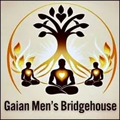
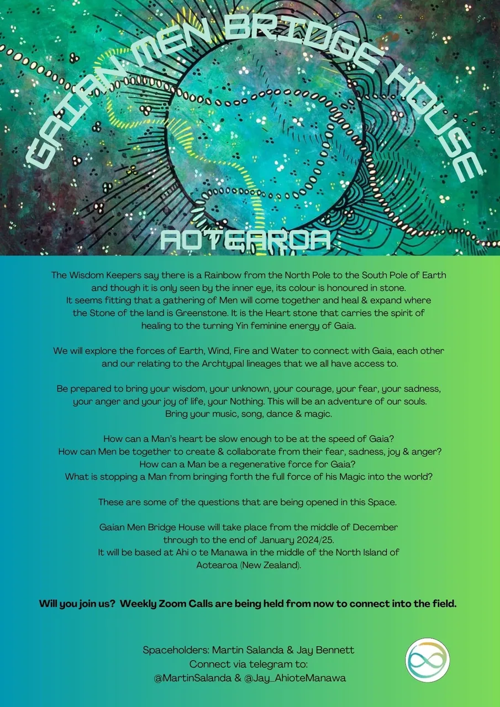
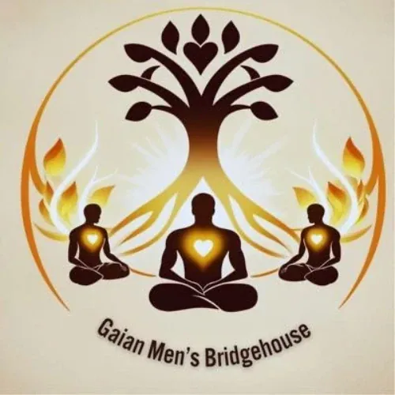
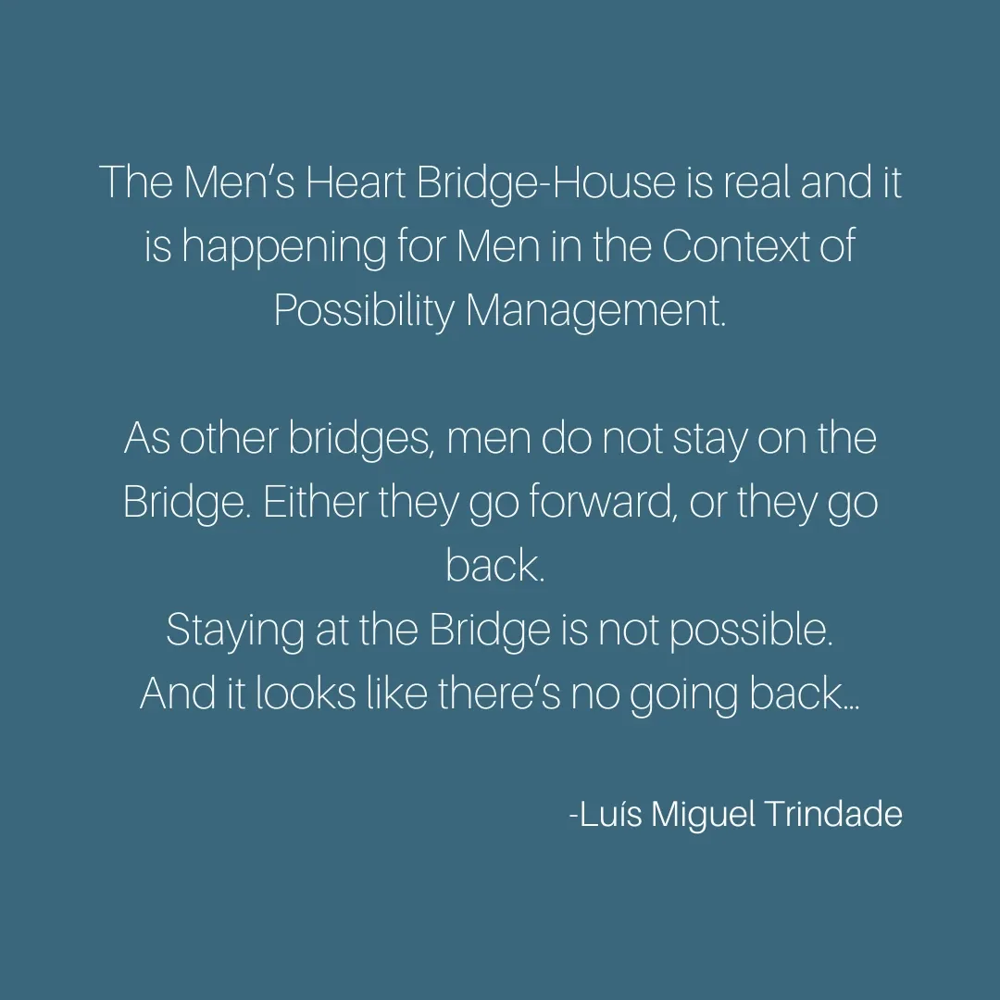

**Gaian Men's **
Bridge House
- …
**Gaian Men's **
Bridge House
- …

- GAIAN MEN'S BRIDGE-HOUSE- Amongst Men...- A - Bridge-Houseleads from the edges of modern culture over to next culture -- Archiarchy- the culture that is naturally emerging now that matriarchy and- patriarchyhave run their course.- The Gaian Men's Bridge-House is a Radically Responsible - Gaian Gameworld- [.]The Gaian Men's Bridge-House is an- Archiarchy Invention Center- [. Men start somewhere different when it comes to creating Archiarchy. While Women carry]- [the]Seed of Archiarchy, walking the path of evolving consciously sourcing from the nothingness is today's challenge for men. On the surface Men benefit from patriarchy by dedicating themselves to mediocrity, by just doing what is asked for or needed. They just get by with it. Keeping their feelings and emotions at bay is a basic necessity to be able to do so. In this numb state the game of competing around resources finds a fruitful soil to sprout. This patriarchal pattern has a high price, not only for Gaia. Men die in average in the majority of the world’s countries- three to ten yearsearlier than Women, mostly leaving a trail of destruction in the emotional, energetic, physical and mental realms of their surroundings and mostly in the people that love them.- The Gaian Men's Bridge-House is dedicated to researching, developing and embodying life-skills for Men with the purpose of training each Man to grow up authentically into a humble and present Spaceholder for Earth and the world, in which the possibility of Archiarchy is rooted. Identifying and healing hierarchical and self destructive patterns based on S.H.I.T. (Standard Human Issues Thoughtware) and exploring the adventure of what else is possible on the other side of the fence, with and when in a team of men that co-create together is a privilege. Being deeply committed to other men's commitment is a non-negotiable agreement at the Gaian Men's Bridge-House. - The possibility of living together with other men, deeply connecting with them and with the global Village in the field of radical responsibility to open doorways for the unknown qualities of being a man is one of the purposes of this experiMENt. - This Matrix building environment offers men multiple ways of expanding their capacity to be present and awake, to go through personal healing coming up in the moment and to be an active part of the next Men’s culture, which is bringing the Archetypal Lineage in service for Gaia. Experimenting with what comes up and sourcing out of the domain of „not knowing how“ is a daily invitation to the courageous beings who will be part of this Gaian Men’s Bridge House. - The Bright Principles of the Gaian Men's BridgeHouse - EVOLUTION- CLARITY- COLLABORATION- HEALING- GUARDIANSHIP
- LOGISTICS FOR THE- GAIAN MEN'S BRIDGE-HOUSE- When, Where, How Much...?- When?- The Gaian Mens Bridgehouse will start around the middle of December and run until the end of January. - Currently the intention is for the Bridgehouse to go mobile and head to Motueka for the Lab for Men which starts on the - Where?Ahi o te Manawa. Locate dat the Southern end of Lake Taupo in the middle of the North Island of New Zealand.- This property is surrounded by native bush with views across the lake; with its access to nature this makes for a great setting for Men to connect with Gaia. - How much?- Accomodation and use of all the facilities is around $80 per week for a room and $50 per week for a tent; - All funds will go back into a project on the land. - Shared costs of electricty, property local rates and wifi are shared. - The cost of the food is that of local market food. We share food costs equally. We eat organic food where possible. - The gardens of the property will provide some of our food needs. - Radical Resposiblity will take place with the payment of incidental costs. - There are no fees towards the Spaceholders/Guardians. - If the lack of money is the reason why you are hesitating to join the Gaian Men's BridgeHouse (or any BridgeHouse), it is ridiculous. Because there is enough money in the world for you to join the BridgeHouse. The conversation is not then about money, but: how are you blocking the resources to support your Evolutionary Path to flow through you? - This question is the gateway to multiple Emotional Healing Processes and thoughtware upgrade. - To prepare yourself, please read and - do the experiments at:- http://becomemoney.mystrikingly.com- http://youandyourjob.mystrikingly.com- http://nonmaterialvalue.mystrikingly.com- There are external events happening in the Possibility Space (physically separated from the Men's Space) which are separate from the Bridge-House daily participation and those are not included in the Bridge-house costs (Firewalk Initiation, Boogie Busting Training and other offers from each of the Men that are living in the Bridge-House). - Context & Traditions of the Gaian Men's Bridge-House- The context of the Gaian Men's Bridge-House is - Radical Responsibility.- If we were perfectly clear about what - Radical Responsibilityis, there would no need to say more about the subject. It is, of course, not the case.- Radical Responsibility means: - What is, is, as it is, here and now in the moment, with no story attached.(Arnaud Desjardins) - Just this.(Lee Lozowick) - There is no such thing as a problem. It is impossible to be a victim. Irresponsibility is an illusion. You have a Box. You are not your Box. Low drama is Gremlin food. Responsibility is applied consciousness. If you see a job it is your job to do. The universe is built out of archetypal love.(Clinton Callahan) - A Radically Responsible context invokes in each person the - Free and Natural Decontaminated AdultEgostate, Archetypally Initiated Woman or Man, and the- Creative Collaborationbetween them.- The unquenchable clarity and unreasonable possibilities that emerge from such a clear context can make your - Gremlingo into an immediate freak-out self-abuse feeding-frenzy accompagnied- Voices,- Self-Cannibalismbehaviours,- Gremlin Violence,- Shame, Doubt,- Depressionand other mixed emotions,- Conclusions,- Projections,- Expectationsand- Resentments. This is why we have a list of requirements to apply to the Gaian Men's Bridge-House.- In the Gaian Men's Bridge-House, we apply - Torus Technologyfor our meeting and decision-taking. For more information about Torus Technology, go here:- https://torustechnology.mystrikingly.com/- [.]- The Gaian Men's Bridge-House makes use of the distinctions, processes, skills and technology of - Possibility Management (- http://possibilitymanagement.org). Technology, tools and processes from other contexts are used to further the purpose of the Gaian Men's Bridge-House, such as Permaculture, Natural Farming, Reforestation, etc...- Read the - Codexfor the Gaian Men's Bridge House- here.- What Will You Contribute and get from the Bridge-House- Each man will bring its own research. What is burning for that man in that moment is what the field might be in the urge for. Being part of the Bridge-House will bring up individual and collective topics. Revealing what is going on then and putting it on the table is another way of contributing to the Bridge-House. Identifying necessities and providing support for possible next steps is key to avoid pursuing the old patriarchal pattern of being mediocre and let the fellow man get away with his inauthenticity. - The Gaian Men Bridge-House is - __not__a place to- consume, especially the offers of the other participants of the Bridge-House - have the expectation to get your problems solved - just hang out with other men - fulfill childhood neediness by projecting daddy onto other men - sulk in the victimhood of being born and raised in patriarchy - This is a space to commit to other men being's commitments by being present and aware, so that the results of the research can be documented and shared. Men on the path of evolution gather to create a humble, awake and dedicated circle, so that each man's individual talents and qualities can thrive in order to ignite inspiration for a new Archan Men's Culture. - What you will get from the Gaian Men's Bridge-House relates directly to your contribution. - Create a way of relating with and relying on men outside of competition and hierarchy - Develop Inner Structure - Clearly experience your own Being and its natural radiance - Empower each other’s unique Genius research - Invoke and develop skills in each other's Non-Material Value - New skills in the domain of your physical body - Move in life from within - and much more... - Requirements to Apply to the Gaian Men- 's- Bridge-House- You have completely and irrevocably left your parents’ house for more than 6 months at the start of your stay (this means that you have no clothes, photos, diplomas or anything else in storage in your parent’s house and that you don’t live with your parents and you don’t live of their money or contributions) - You have sucessfully participated or you have already applied to the Gremlin TransformationCore Chapter - Chapter 0. - You have participated in at least one Expand The BoxTraining - The participation in the Gaian Men's BH is of 1 week minimum, there is no maximum length of participation. - To apply, please contact: - Jay Bennett - jay@athedge.org or on Telegram https://t.me/Jay_AhioteManawa , - Martin Salanda - salanda.martin@gmail.com or on Telegram https://t.me/MartinSalanda[.] - We will then set up a conversaview with two of the Men of the Bridge-House. A conversaview is a space where both you and the spaceholder discover what is the next step for your participation in the Bridge-House. It can be anything. No two people would have the same steps. - When it is evident that you have entered the Gaias Men's Bridge-House and that your next step is to join, you will be officially welcomed to join the GMBH.
- # The Emergence of- # Bridge-House - Contact - StartOver.xyz Note - NOTE:This website is a- Bubble in the Bubble Mapof the free-to-play, massively-multiplayer, online-and-offline, thoughtware-upgrade, matrix-building, personal-transformation, adventure-game called- StartOver.xyz. It is a- doorwayto- experimentsthat- upgrade your thoughtwareso you can- createmore- possibility. Your knowledge is what you think- about. Your- thoughtwareis what you use to think- with. When you- change your thoughtware, you go through a- liquid stateas your mind- reorganizesitself. Liquid states can bring up transformational- feelingsand- emotions. By- upgrading your thoughtwareyou- build matrixto hold more- consciousness (archived — not captured)and leave behind a life of- reactivity. No one can upgrade your thoughtware for you. No one can stop you from upgrading your thoughtware. Our theory is that when we- collectively build1,000,000 new Matrix Points we will change the morphogenetic field of the human race for the better. Please choose- responsiblyto read this website. Reading this whole website is worth 1 Matrix Point. Doing any of the experiments earns you additional Matrix Points. Please use Matrix Code GMBHxx.00 to log your Matrix Point for reading this website on- StartOver.xyz. Thank you for playing full out!